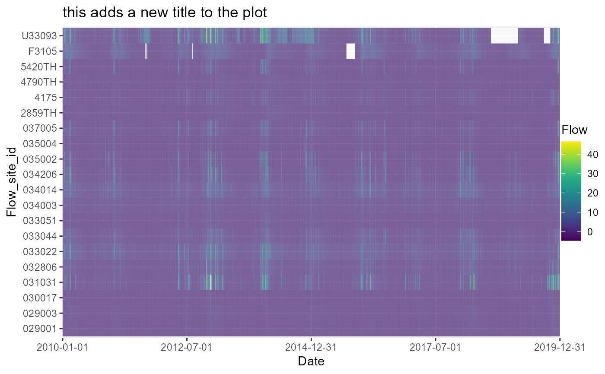
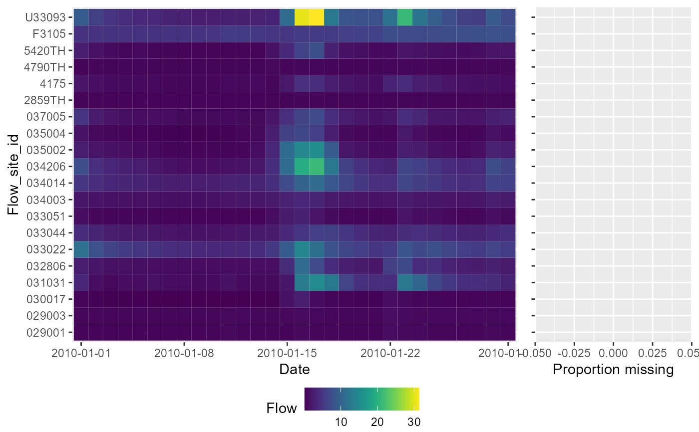
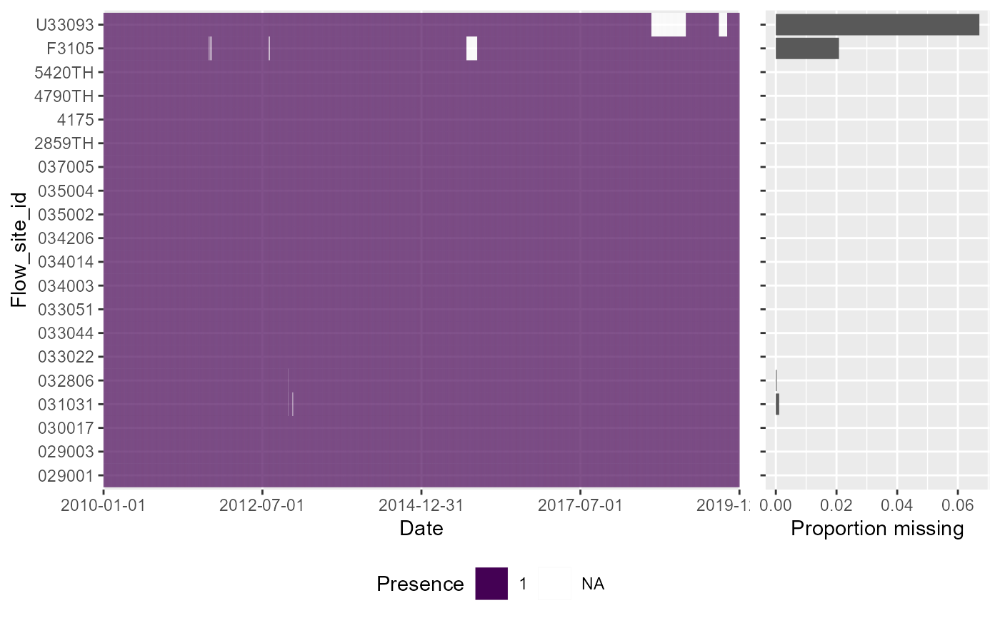
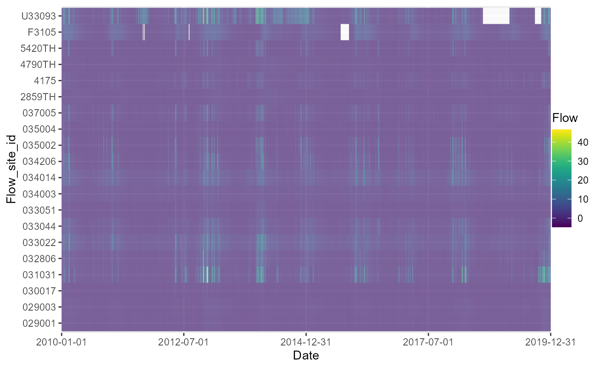
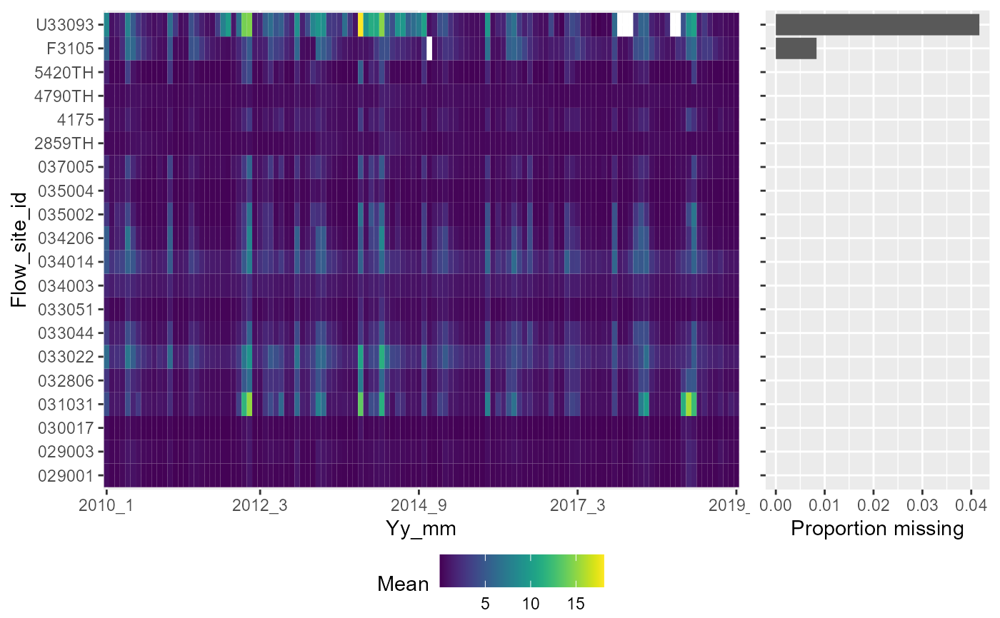
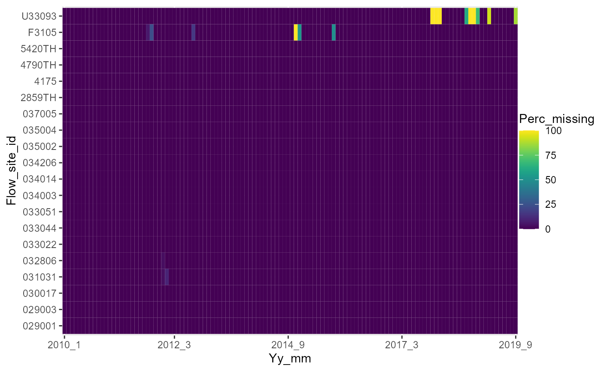

Visualising and summarising gaps in time series data
plot_heatmap.RdThe plot_heatmap function is designed to visualise and summarise gaps in time series data. It plots time series data for multiple sites as a tiled heatmap, and optionally produces tabular summaries of data completeness by time period and site. Although designed for application with flow time series data, it can be applied to any type of numerical data, with or without a time dimension.
Usage
plot_heatmap(data, x, y, fill, colour = "viridis", lab.x = x, lab.y = y, lab.legend = fill, dual = FALSE, list_out = TRUE, limits = FALSE, save = FALSE, save_dir = getwd(), ...)Arguments
- data
Name of dataframe or tibble containing data to be processed. Must be in long format (i.e. separate columns for x and y). If list_out is set to TRUE for the missingness information tables, user must supply an expanded and pre-sorted dataset to calculate missing time steps, where data is sorted by y and then x (i.e. sites sorted into date order for all possible date time steps). Function sorts "x" data into increasing timesteps by default.
- x
Name of column containing variable to be used to define x-axis of heatmap (ideally a time series variable e.g. date or year).
- y
Name of column containing variable to be used to define y-axis of heatmap (ideally a spatial grouping factor e.g. site_id).
- fill
Name of column containing variable to be plotted (e.g. flow, WHPT O/E) (continuous variate, integer, or double).
- colour
A character string indicating the colorramp option to use. Limited to the five viridis package options: "magma" (or "A"), "inferno" (or "B"), "plasma" (or "C"), "viridis" (or "D") or "cividis" (or "E"). Default = "viridis".
- lab.x
Character string to be used on the x axis. Default is name of x variable.
- lab.y
Character string to be used on the y axis. Default is name of y variable.
- lab.legend
Character string to be used on the legend title. Default is name of fill column variable.
- limits
Logical value specifying whether or not to trim the data to plot 30 x by 20 y values into one tile. Default = FALSE.
- dual
Logical value determining whether or not to include a histogram of % missingness alongside the heatmap. Default = FALSE.
- list_out
logical value specifying whether or not to produce tabular summaries of data completeness. Default = TRUE.
- save
Logical value specifying whether or not output plot should be saved to file. Default = FALSE.
- save_dir
Path to folder where plot should be saved. Default = Current working directory.
- ...
Provision to include additional ggplot plotting and saving arguments, including for example: theme, file type, width and size. See ?theme and ?ggsave for details.
Value
A list of three elements:
A ggplot tiled heatmap with x (e.g. time) and y (e.g. site) axes. If dual = TRUE, the ggplot object includes a marginal histogram of % missingness. The plot can be optionally saved as a png file. If list_out is set to TRUE the list will also contain:
A tibble summary of data completeness for each value or level of x: number and proportion of missing observations, and total number of observations.
A tibble summary of data completeness for each value or level of y: number and proportion of missing observations, total observations, the number of gaps (sequences of missing time steps) in the dataset, and what the shortest and longest run of missing time steps are. The later three will be NA if there are no missing time steps.
Details
Requires data in long format (e.g. x, y, fill columns). x and y can be any numeric or categorical data; fill must be numeric.
Large datasets may be difficult to visualise clearly using a single heatmap, and need to be subset prior to executing the function.
If x (or y) is a time series, the user should check that the time series is complete - e.g. a complete sequence of dates should be present in the data, even if the fill variable is NA on some dates. See example below illustration use of expand.grid prior to remedy gaps prior to executing the function.
The examples below illustrate how the data can be aggregated (e.g. to different time steps, e.g. year, season, month) and summarised (e.g. using mean, min, max, sd, count) prior to executing the function to explore patterns and gaps in the data.
Examples
# read in example dataset of mean daily flows for 20 sites
df <- example_plot_heatmap
# basic application
a <- plot_heatmap(data = df, x = "date", y = "flow_site_id", fill = "flow")
# view heatmap of flows, by site and date
a[[1]]
# amend ggplot elements, such as the title
a[[1]] + labs(title = "this adds a new title to the plot")

# view tibble of missing flow values by date (variable x)
a[[2]]
#> # A tibble: 3,652 × 4
#> x missing total prop_missing
#> <fct> <int> <int> <dbl>
#> 1 2010-01-01 0 20 0
#> 2 2010-01-02 0 20 0
#> 3 2010-01-03 0 20 0
#> 4 2010-01-04 0 20 0
#> 5 2010-01-05 0 20 0
#> 6 2010-01-06 0 20 0
#> 7 2010-01-07 0 20 0
#> 8 2010-01-08 0 20 0
#> 9 2010-01-09 0 20 0
#> 10 2010-01-10 0 20 0
#> # ℹ 3,642 more rows
# view tibble of missing flow values by site (variable y)
a[[3]]
#> # A tibble: 20 × 7
#> y missing total prop_missing number_of_gaps smallest_gap biggest_gap
#> <chr> <int> <int> <dbl> <int> <int> <int>
#> 1 029001 0 3652 0 NA NA NA
#> 2 029003 0 3652 0 NA NA NA
#> 3 030017 0 3652 0 NA NA NA
#> 4 031031 4 3652 0.00110 2 1 3
#> 5 032806 1 3652 0.000274 1 1 1
#> 6 033022 0 3652 0 NA NA NA
#> 7 033044 0 3652 0 NA NA NA
#> 8 033051 0 3652 0 NA NA NA
#> 9 034003 0 3652 0 NA NA NA
#> 10 034014 0 3652 0 NA NA NA
#> 11 034206 0 3652 0 NA NA NA
#> 12 035002 0 3652 0 NA NA NA
#> 13 035004 0 3652 0 NA NA NA
#> 14 037005 0 3652 0 NA NA NA
#> 15 2859TH 0 3652 0 NA NA NA
#> 16 4175 0 3652 0 NA NA NA
#> 17 4790TH 0 3652 0 NA NA NA
#> 18 5420TH 0 3652 0 NA NA NA
#> 19 F3105 76 3652 0.0208 5 2 62
#> 20 U33093 245 3652 0.0671 2 47 198
# setting dual = TRUE adds a marginal histogram displaying % missingness
a <- plot_heatmap(data = df, x = "date", y = "flow_site_id", fill = "flow", limits = TRUE, dual = TRUE)
#> Warning: limits set to TRUE, dataset being trimmed to a maximum of the first 30 unique x values and first 20 unique y values, no effect if less than 30 x and 20 y occur within the dataset. If trimming is not wanted set 'limits' = FALSE

# to plot this device, the code needed is slightly different:
gridExtra::grid.arrange(a[[1]])
# Presence-absence heatmap plot, showing whether or not flow was measured on each date at each site. Using dual=TRUE includes a marginal barchart to visualise, for each site, the proportion of days that do not have a daily flow value.
df$presence <- "1"
df$presence[is.na(df$flow)]<- NA
a <- plot_heatmap(data = df, x = "date", y = "flow_site_id", fill = "presence", dual = TRUE)

gridExtra::grid.arrange(a[[1]])
# Identifying missing variables.
# If certain dates are completely missing from an input dataset, they will not show in the heatmap plot unless they are explicitly added as missing values. In this example we expand the x time step to include missing days and re-plot to demonstrate how this can be accounted for. If not using some form of date, a list of unique options of x and or y will need to be specified as a vector similar to that produced by unique(df$sites).
# artificially remove some specific days from the data
temp1 <- df[!df$date %in% lubridate::date(c("2000-02-07", "2000-02-08", "2000-12-12", "2001-09-19")),]
# use expand.grid() to re-create the missing days
new <- expand.grid(date = seq(min(temp1$date, na.rm=TRUE), max(temp1$date, na.rm=TRUE), 1), flow_site_id = unique(temp1$flow_site_id))
# join the flow data to the new expanded grid to generate NA flow values on the four missing days
temp <- dplyr::full_join(temp1, new, by=c("date","flow_site_id"))
temp[temp$date %in% lubridate::date(c("2000-02-07","2000-02-08", "2000-12-12","2001-09-19")),]
#> # A tibble: 0 × 6
#> # ℹ 6 variables: input <chr>, flow_site_id <chr>, date <date>, flow <dbl>,
#> # quality <chr>, presence <chr>
temp <- temp[order(temp$date),]
# heatmap showing missing daily flow records (zoom in RStudio to see all four missing days)
a <- plot_heatmap(data = temp, x = "date", y = "flow_site_id", fill = "flow")
a[[1]]

rm(list= c("new","temp", "temp1"))
# Calculate and then plot monthly mean flows
# artificially remove some data
temp <- df
temp$flow[temp$date %in% lubridate::date(c("2000-02-07","2000-02-08","2000-12-12","2001-09-19"))] <- NA
temp$flow[temp$flow_site_id %in% c("SS60F015","029004") & temp$date %in% lubridate::date(c("2000-01-02","2001-06-22","2001-10-12"))] <- NA
# calculate monthly mean flows
temp$month <- lubridate::month(df$date)
temp$year <- lubridate::year(df$date)
temp$yy_mm <- paste(temp$year, temp$month, sep = "-")
temp1 <- temp %>% dplyr::group_by(month, year, yy_mm, flow_site_id) %>%
dplyr::summarise(across(.cols= "flow",
list(mean = ~mean(flow, na.rm = TRUE),
missing = ~length(which(is.na(flow))),
total = ~length(flow),
perc_missing = ~(length(which(is.na(flow)))/length(flow))*100),
.names = "{.fn}"))
#> `summarise()` has grouped output by 'month', 'year', 'yy_mm'. You can override
#> using the `.groups` argument.
temp1$yy_mm <- paste(temp1$year,temp1$month,sep="_")
# heatmap showing monthly mean flows
a <- plot_heatmap(data = temp1, x = "yy_mm", y = "flow_site_id", fill = "mean",dual = TRUE)

gridExtra::grid.arrange(a[[1]])
# heatmap showing percentage completeness of the daily flow data in each month
a <- plot_heatmap(data = temp1, x = "yy_mm", y = "flow_site_id", fill = "perc_missing")
a[[1]]

# every month has a mean flow, so no missing records at this time step
a[[3]]
#> # A tibble: 20 × 7
#> y missing total prop_missing number_of_gaps smallest_gap biggest_gap
#> <chr> <int> <int> <dbl> <int> <int> <int>
#> 1 029001 0 120 0 NA NA NA
#> 2 029003 0 120 0 NA NA NA
#> 3 030017 0 120 0 NA NA NA
#> 4 031031 0 120 0 NA NA NA
#> 5 032806 0 120 0 NA NA NA
#> 6 033022 0 120 0 NA NA NA
#> 7 033044 0 120 0 NA NA NA
#> 8 033051 0 120 0 NA NA NA
#> 9 034003 0 120 0 NA NA NA
#> 10 034014 0 120 0 NA NA NA
#> 11 034206 0 120 0 NA NA NA
#> 12 035002 0 120 0 NA NA NA
#> 13 035004 0 120 0 NA NA NA
#> 14 037005 0 120 0 NA NA NA
#> 15 2859TH 0 120 0 NA NA NA
#> 16 4175 0 120 0 NA NA NA
#> 17 4790TH 0 120 0 NA NA NA
#> 18 5420TH 0 120 0 NA NA NA
#> 19 F3105 0 120 0 NA NA NA
#> 20 U33093 0 120 0 NA NA NA
rm(list=c("temp","temp1"))